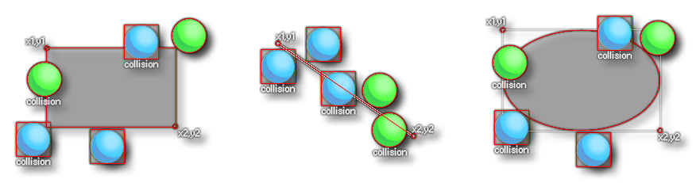

Wenn Kollisionsform Wenn Kollisionsform
Wenn Kollisionsform Wenn Kollisionsform Diese Aktion wird verwendet, um zu prüfen, ob eine Kollision mit einer Instanz eines bestimmten Objekts innerhalb eines bestimmten geformten Bereichs oder entlang einer Linie vorliegt. Sie geben die Form (Rechteck, Ellipse oder Linie), das zu überprüfende Objekt an, und geben dann die Koordinaten für die oberen linken und rechten unteren Ecken der verwendeten Form oder bei einer Linie den Anfang und an Endpositionen. Dies können absolute Positionen im Spielzimmer sein oder Positionen relativ zu der Instanz, die die Aktion ausführt. Wie das funktioniert, sehen Sie im Bild unten: 
Wie Sie sehen, hängen die Ergebnisse von der Kollisionsmaske der zu prüfenden Instanz ab, dh der Instanz des gesuchten Objekts muss ein Sprite zugewiesen sein sprite_index oder ein Sprite, das dem zugeordnet ist mask_index. Ist dies nicht der Fall, werden sie von diesen Funktionen nicht erkannt, unabhängig davon, ob sie ein Sprite zeichnen oder nicht. Es ist erwähnenswert, dass jede Instanz, die vollständig innerhalb der für die Ellipsen- oder Rechteckform festgelegten Grenzen liegt, auch eine Kollision zurückgibt. Die Aktion wird bis bewertet true wenn eine Kollision erkannt wird oder false Andernfalls können Sie auch das Nicht- Flag prüfen, um zu prüfen, ob keine Kollision mit dem angegebenen geformten Bereich vorliegt, und die Aktion wird dann nur als ausgewertet true Wenn keine Kollisionen gefunden werden, wird dies als bewertet false. Sie können auch die Option Selbst ausschließen festlegen, um die aufrufende Instanz von der Kollisionsprüfung auszuschließen.
Als nächstes können Sie die Option " Return List" aktivieren bzw. deaktivieren. Überprüfen bedeutet dies, wird die Aktion erstellen und eine bevöl Liste Datenstruktur mit allen Instanzen in Kollision mit der Form und die Zielvariable auf die DS - Liste ID gesetzt. Wenn das Kontrollkästchen deaktiviert ist, wird die Variable Target nur auf einen Wert unter 0 gesetzt, wenn keine Kollision erkannt wird, oder auf den eindeutigen ID-Wert einer der Instanzen in der Kollision. Wenn mehrere Instanzen in einer Kollision sind, besteht keine Möglichkeit dafür wissen, welche Instanz-ID zurückgegeben wird, wenn keine Liste verwendet wird).
Wenn Sie eine Liste ausgewählt haben und die Zielvariable nicht auf Temp gesetzt ist, können Sie auch die Option " Freies Ziel" auswählen. Wenn eingestellt auf true wird dann die in der Zielvariable enthaltene Liste gelöscht und bei jedem Aufruf der Aktion eine neue Liste erstellt (und an die Zielvariable zurückgegeben). Auf diese Weise können Sie die gleiche Variable, ohne sich um Speicherlecks wiederverwenden, wie, wenn Sie nicht über Freies Ziel Option überprüfen werden Sie verantwortlich für die Zerstörung der Liste, bevor die Variable wieder in der Aktion verwendet wird. Unabhängig davon, ob diese Option aktiviert ist oder nicht, enthält die Zielvariable immer eine Listen-ID, wenn Sie die Aktion auf Return List gesetzt haben. Diese muss daher freigegeben werden, wenn die Instanz oder die Instanz zerstört wird Raum endet (Sie können dazu beispielsweise das Ereignis Clean Up zusammen mit der Aktion Free Data Structure verwenden ). Es ist erwähnenswert, dass Sie die Option " Freies Ziel" so einstellen können, dass eine vordefinierte Variable oder ein Ausdruck verwendet wird, um zu steuern, wann die Listendatenstruktur freigegeben wird, indem Sie die Variable an einer anderen Stelle festlegen (oder andere Ergebnisse für den Ausdruck haben), sofern dies der Fall ist bewertet zu true / false.
Schließlich geben Sie die Target- Variable an, in der Sie den zurückgegebenen Wert oder die Listen-ID speichern möchten. Wenn Sie die Zielvariable kennzeichnen den zurückgegebenen Wert als eine Temp (lokales) Variable zu halten, dann wird die Aktion diese Variable erstellen den Rückgabewert zu halten, nur bis zum Ende der Veranstaltung, in diesem Fall der freien Ziel Option tut nichts und Sie sind für die Zerstörung der DS-Liste verantwortlich, wenn diese Option aktiviert ist. Wenn keine Zielvariable angegeben wird und die Option " Rückgabeliste" aktiviert ist, wird keine Liste erstellt.
WICHTIG! Kollisionen werden nur für die Instanzen registriert, die über eine gültige Kollisionsmaske verfügen, dh: Sie haben ein Sprite zugewiesen sprite_index oder ein Sprite, das dem zugeordnet ist mask_index. Wenn die Instanzen des Objekts, für das in dieser Aktion geprüft wird, keine Kollisionsmaske haben, wird die Kollision nicht erkannt, unabhängig davon, was die Instanz gerade zeichnet.
Beachten Sie, dass hinzufügen Aktionen in einen „if“ Block, sollten sie auf der Seite der Aktion fallen gelassen werden, wie im Bild unten dargestellt:

Streit Beschreibung Shape Die zu verwendende Form Object Das Objekt, das auf Instanzen von überprüft werden soll x1 Die x-Position zum Starten y1 Die y-Position zum Starten x2 Die x-Position, an der zu enden ist y2 Die y-Position, um zu enden Free Target Kann auf eine Variable oder einen Ausdruck oder auf gesetzt werden true / false um das Freigeben des Listenspeichers zu steuern, wenn eine Listenvariable erneut verwendet wird Target Die Variable, deren Zielwert der Rückgabewert der Aktion sein soll

Der obige Aktionsblockcode prüft auf eine Kollision mit beliebigen Instanzen des Objekts "obj_Enemy" innerhalb eines 100px-Kreises um die Position der aufrufenden Instanzen. Die Aktion generiert eine Liste aller Instanzen, bei denen festgestellt wurde, dass sie sich in Kollision befinden, und speichert die Listen-ID in der Variable Target. Wenn die Aktion zu bewertet wird true Dann wird die Liste durchlaufen, und für jede Instanz, deren ID in der Liste gespeichert ist, ist die Variable "hp" um 1 reduziert. Die DS-Liste wird dann freigegeben.